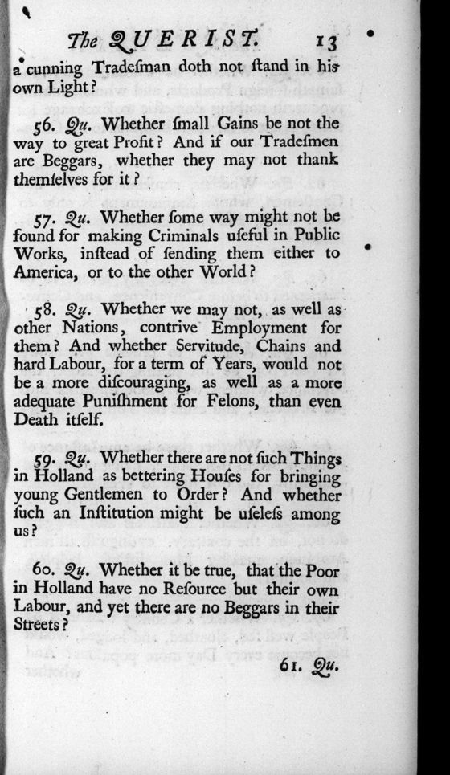

“A more adequate Punishment for Felons, than even Death itself” (queries 55–60)
English: Dublin 1735, p. 13, scan. Long s modernised. Highlighted: Lecky’s quotation.

56. Qu. Whether small Gains be not the way to great Profit? And if our Tradesmen are Beggars, whether they may not thank themselves for it?
57. Qu. Whether some way might not be found for making Criminals useful in Public Works, instead of sending them either to America, or to the other World?
58. Qu. Whether we may not, as well as other Nations, contrive Employment for them? And whether Servitude, Chains and hard Labour, for a term of Years, would not be a more discouraging, as well as a more adequate Punishment for Felons, than even Death itself.
59. Qu. Whether there are not such Things in Holland as bettering Houses for bringing young Gentlemen to Order? And whether such an Institution might be useless among us?
60. Qu. Whether it be true, that the Poor in Holland have no Resource but their own Labour, and yet there are no Beggars in their Streets?
And on the facing page (p. 14): “62. Qu. Whether, consequently, the fine Gentlemen, whose Employment is only to dress, drink, and play, be not a public Nuisance?”
Backlinks
Every place in Rationalism in Europe that links to this page (generated automatically when the site is built).
- Chapter III: note 183